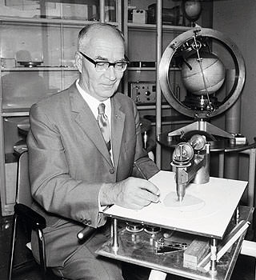

自從1899年創立以來，以緊緊相扣的四個銀色圓環為廠徽、象徵品牌生生不息的Audi，除了在1901年、創辦人之一的Dr. August Horch便推出了第一款量產汽車：Horch 4-5 PS Vis-à-Vis外，超過百年的漫長歷史當中，還曾經推出過Horch 303 Berlin搭載8缸引擎的豪華房車代表、Front UW全球首款前置引擎前輪驅動量產車、NSU RO 80轉子引擎房車等膾炙人口且重要的量產車；不但首開許多創舉，更奠定了Audi在車壇無可動搖的地位。
The first Horch：Audi品牌史上第一部汽車
當Dr. August Horch毅然於1899年離開Karl Benz所成立的Benz & Co. Rheinsiche Gasmotoren-Fabrik Mannheim 引擎工廠，並於Koelner (科隆) 成立A. Horch & Cie公司，開始著手研發自製車輛後，短短2年過去，1901年、Dr. August Horch不但打造了Audi第一款量產車：Horch 4-5 PS Vis-à-Vis，並以4~5匹馬力的輸出，在當時車輛多僅有2~3匹馬力的年代，證明了自己對機械結構的天分。
1901年亮相的Horch 4-5 PS Vis-à-Vis，採開放式的車體設計與雙排式座椅規劃，控制方向的控制器位於中央，且設計了以蠟燭為光源的「車燈」，能在昏暗的天候下提供照明。
而且特別的是，Horch 4-5 PS Vis-à-Vis甫一推出不但便擁有4~5匹的最大馬力，且極速「高達」時速32公里，幾乎是當時一般車款的2倍；同年稍晚Dr. August Horch還替它升級為可輸出10匹馬力的雙缸引擎，且1902年換上了擁有20匹馬力的4缸引擎，是1910年代的性能車代表之一，並讓對手與車迷都留下了深刻的印象。
此外，對馬力與速度之追求從未休止的Audi，不僅所打造的第一款車The first Horch，便擁有時速32公里的極速表現，1937年Grand Prix賽季即將結束之際，Auto Union AG以一輛Type C賽車、搭配重新設計的空力造型流線車身，由傳奇車手Bernd Rosemeyer在德國著名的Autobahn無限速公路上，還跑出高達時速406.3公里的驚人成績，刷新當時一般公路的極速紀錄。
而且這個對速度的熱情與渴望，日後更驅使著Auto Union AG及Audi所生產的多款賽車，在各地Grand Prix賽車場、WRC (World Rally Champion) 世界越野錦標賽跑道、DTM (Deutsche Tourenwagen Masters) 德國房車錦標賽，以及最艱難的法國Le Mans 24小時耐久賽事中，都寫下了非常輝煌的紀錄。
NSU RO 80：搭載轉子引擎的1967年世界風雲車
|  |
今天若談起轉子引擎，可能車迷們第一時間想到的只有來自日本Mazda的RX系列，但發明轉子引擎的Dr.Felix Wankel，其實是出身於Audi的前身：NSU。並曾在1967至1977年間、量產了一款搭載雙轉子引擎的4門房車：NSU RO 80，且一推出便拿下歐洲當地1967年的「Car of the Year年度風雲車」大獎。
轉子引擎 (Rotary Internal Combustion Engine、簡稱Rotary Engine)，是四行程引擎的一種，發明於1959年時，因此又稱為Wankel引擎；與傳統往復式活塞引擎不同的是，轉子引擎的優勢在於轉子運轉一圈能產生出3次的動力行程，且同時捨去連桿和曲軸等機械結構，也減少引擎動力的損失。
巧合地與第一輛Mazda轉子引擎跑車Cosmo Sport同為1967年誕生的NSU RO 80，採用的是Auto Union AG於1933年首創的前置引擎、前輪驅動 (FF) 設定，引擎蓋下搭載了一具排氣量497c.c. .×2的雙轉子引擎；雖然只有115匹的最大馬力，但由於轉子引擎天生體積小，且機件內部不需曲軸等零件、重量較輕，所以NSU RO 80的車重僅1,251公斤而已。
然而，RO 80後期的命運卻有點坎坷，因為早期的轉子引擎的耐用性無法合乎Audi的要求，較高的故障率更影響了這款車在市場上的口碑，儘管Audi後期已找出對策，卻無法喚回消費者的信任；於是在1969年、Audi與NSU正式合併後，RO 80的引擎就換成了由Ford所出品的Essex V4引擎，所以RO 80也是最後一款掛著NSU廠徽的車款，深具紀念意義，最後一共生產了37,398輛。
此外，除了是Audi第一款轉子引擎車型，NSU RO 80的身上其實還可見到許多劃時代的設計：不但搭載了當時只有頂級跑車或豪華房車才有的四輪碟式剎車系統，能夠節省製造成本與空間的前麥佛遜、後多連桿懸吊結構設計，如今更幾乎已成為現代車款的標準配置。而且RO 80並沒有離合器踏板的設計，換檔是透過壓下排檔桿頂端的按鈕來進行，可以說是現今序列式自手排變速箱的始祖。
Audi 100：1982年創下0.30的低風阻記錄
Audi 100其實就是現行A6車系的前身，第1代車型誕生於1968年、搭載原廠代號C1的底盤，共有4門房車與雙門轎跑車兩款車型，採前置引擎、前輪驅動 (FF) 設定，是Audi二次世界大戰後的第一款自主研發作品，總共生產了約80萬輛 (雙門車型則是打造了約3萬輛)，讓Audi在戰後第一次嚐到成功的滋味。
第2代Audi 100，發表於1976年、原廠底盤代號C2，同樣採前置引擎、前輪驅動 (FF) 設定，並有4門房車與5門旅行車共兩種規劃，並首度搭載全球第一具直列5缸引擎，擁有至少100匹的最大馬力，總生產量則是高達約90萬輛。
至於1982年底、以1983年式車型推出之第3代Audi 100、原廠底盤代號C3，擁有4門房車與5門旅行車兩款車型，是Audi大力倡導之安全測試與空氣力學測試下的產物，不但擁有平滑的車身、窗框、輪弧等設計，且組裝紮實，並在當年創下了0.30Cd的低風阻記錄，較同型車減少了多達10%的空氣阻力，讓它獲得更好的油耗表現與車身靜肅性，徹底改變了汽車外型的設計，總生產數超過100萬輛。
此外，1986年、Audi再替第3代100車系裝上了著名的quattro智慧型恆時四輪傳動系統後，而且為了證明這套四輪傳動系統的實力，特別以一輛Audi 100 CS quattro，成功由底部爬上芬蘭一個總長78公尺、坡度37.5度的滑雪跳台，達成前所未見的創舉，也替日後A6車系 (2005年、一輛搭載quattro智慧型恆時四輪傳動系統的Audi A6 quattro也成功地完成了此項挑戰) 奠定了深植人心的基礎。
TT：1998年以TT Coupé Concept開發而來的雙座跑車
敢直接把概念車拿來量產的廠商並不多，但以「Vorsprung durch Technik (進化科技 定義未來)」自許的Audi就是有這種本事，而其中最為人所津津樂道的車款，則是1998年發表的第1代Audi TT車系。
當Audi於1995年IAA德國法蘭克福車展上推出TT Coupé Concept概念車、同年日本東京車展上展出TTS Roadster Concept概念車時，車迷與全球媒體應該都沒想到三年後的1998年法國巴黎車展上，Audi居然只有稍微修正C柱前方的窗戶造型、就原封不動地將概念設計幻化成真，推出外型與內裝令人驚艷、動力及操控表現十分出色的第一代TT。
Audi TT的命名由來，源自英國傳奇的TT (Tourist Trophy) 曼島車賽，搶眼的造型設計及圓形的飽滿線條，完整地移植自1995年推出之TT Coupé Concept概念車；至於內裝設計上，第1代TT車系則是幾乎完整地保留了所有TT Coupé Concept與TTS Roadster Concept概念車上的設計，並大量以黑色或褐色真皮與鋁合金搭配，並呼應著車身外觀之圓弧線條、於冷氣出風口、旋鈕等細節處大量採用「圓」的元素造型，由裡到外成功營造出前衛的科技感。
至於傳動系統方面，擁有TT Coupé與TT Roadster兩種車型的第1代TT車系，則是提供了前置引擎、前輪驅動 (FF) 設定與quattro智慧型恆時四輪驅動兩種選擇，搭配當時Audi旗下知名的1.8升直列4缸20V渦輪增壓引擎，或是3.2升V6心臟，不但能提供150至250匹馬力充沛的動力輸出，且能夠兼顧出色的駕駛樂趣；並已於2006年推出外型較銳利化、但概念充分保留的第2代TT車系，是Audi創廠百年來、最具代表性的現代傳奇車款之一。


-

灌注賽道精神-認識Audi Sport品牌
提到Audi當家超跑R8，相信沒有人會忽略它的存在，Audi憑什麼打造出這世界上首屈一指的超跑呢？答案就在Audi Sport GmbH工廠裡；這裡就像一座神聖殿堂...
-

純粹的賽道魂魄-Audi RS家族車款介紹
Audi旗下性能最強悍的兵團，就屬R8及RS Models家族車款，為求最完美的性能表現，這些車款均交由Audi Sport GmbH工廠製作，未來還會導入RS4 Avant、RS5 Coupe及TT RS三款...
-

舒適與性能，諧和共存-Audi S家族車款介紹
許多人渴望擁有性能，但程度上因人而異，前一篇介紹的Audi RS家族車款是為極度熱血份子所打造，至於那些想要兼顧日常實用與舒適性...